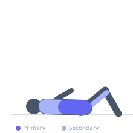
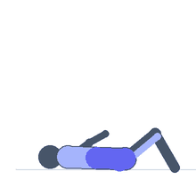

Exercise guide / Arch Hold
Arch Hold
The arch hold is a prone isometric exercise where the athlete lies face-down and simultaneously lifts the arms, chest, and legs off the floor, forming an arched shape. It is the antagonist to the hollow hold and develops the posterior chain, particularly the erector spinae and gluteus maximus, under sustained isometric tension. Regular training of the arch hold contributes to spinal extensor endurance and scapular stability.
Primary muscles
erector spinae
gluteus maximus
Secondary muscles
biceps femoris long head
trapezius middle
trapezius lower
Stabilizers
rhomboid major
deltoid posterior
Equipment
No Equipment (Bodyweight)


Starting position
- Lie face-down (prone) on the floor with arms extended overhead, palms facing down, and legs straight.
Setup
- No equipment needed. Use a mat for comfort on a hard floor.
Steps
- Step 1: Lie prone with arms extended overhead and legs together.
- Step 2: Squeeze the glutes firmly and engage the lower back muscles.
- Step 3: Simultaneously lift both arms and both legs off the floor, raising as high as comfortable without straining the neck.
- Step 4: Hold the arched position with the neck in a neutral position — do not hyperextend the neck upward.
- Step 5: Hold for the prescribed duration, then lower with control.
Coaching cues
- Squeeze your glutes like you are holding a coin
- Long arms, long legs — reach in opposite directions
- Keep your eyes on the floor
Breathing
- Breathe shallowly through the nose during the hold. Exhale slowly as you lower.
Range of motion
- Lift arms and legs as high as can be maintained with a neutral neck and engaged glutes. Do not force range at the expense of form.
Tempo
- Hold for 20–60 seconds per set. Practice in conjunction with hollow holds to develop balanced spinal strength.
Common mistakes
- Hyperextending the neck by looking up excessively
- Allowing the knees to bend during the hold
- Failing to squeeze the glutes, leaving most of the work to the lower back alone
- Holding the breath
Safety
- Keep the neck neutral — the gaze should be toward the floor, not the ceiling.
- Avoid if experiencing acute lumbar hyperextension pain.
Training
- strength: 1–1 reps
- endurance: 1–1 reps
- strength: 3–4 sets
- endurance: 3–4 sets
- Rest: {'strength': 60, 'endurance': 45}